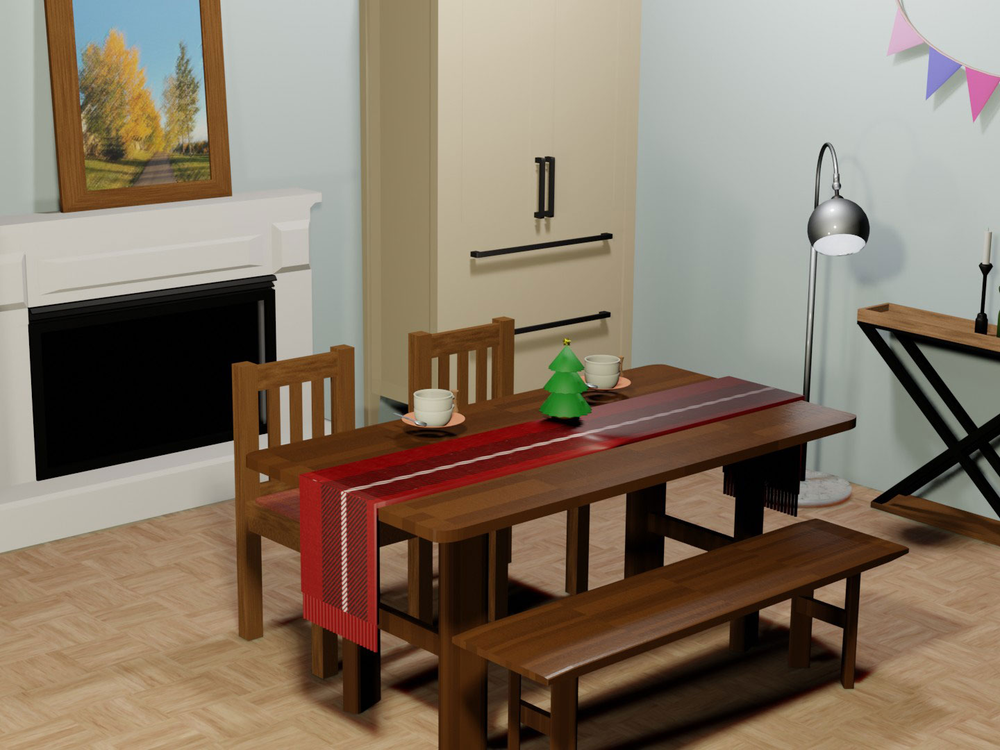

3D Dining Room
Close-up
Overview
Project Type:
School Project (Personal work)
Goal:
Use Blender to create a dining room scene. The scene
must have at least 12 items. All items need to have
appropriate materials.
Role:
3D Designer
Software used:
Blender
Challenge:
During designing, I not only need to consider
aesthetics but also need to add appropriate scale and
position for each product. Pasting materials also
challenges me because it took me so much time.
Solution:
Before I started to build my dining room, I observed
the scale of furniture around me. In addition, have a
project management plan and that executing it
effectively.